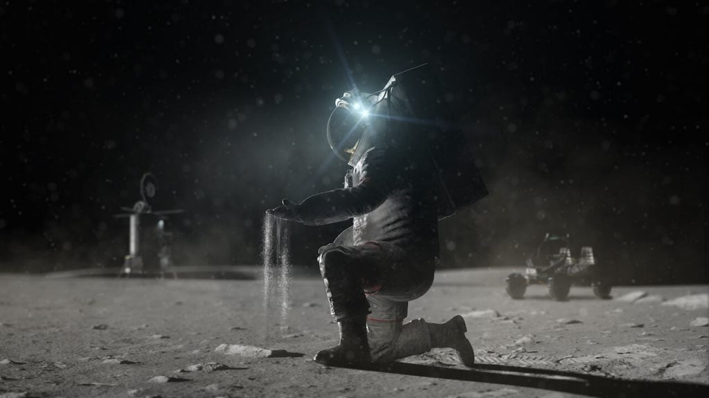

မာနာ လျှပ်စစ် ကုမ္ပဏီက ဒီ ဆိုလာပြားထုတ် စက်တွေကို မြေဘူး (Terrabox) လို့ အမည်ပေး ထားပါတယ်။ ဒီ ဆိုလာပြားထုတ် စက်တွေကို သဲကန္တာရ ဒေသတွေမှာ တပ်ဆင်ပြီး ဆိုလာပြားတွေ ထုတ်လုပ်သွားဖို့ ရည်ရွယ် ထားတာ ဖြစ်ပါတယ်။
မာနာ လျှပ်စစ် ရဲ့ ရည်ရွယ်ချက်က ဒီနေရာတင် ရပ်သွားမှာ မဟုတ်ပါဘူး။ ကုမ္ပဏီက အခု နည်းပညာကို အသုံးချပြီး နောင် အနာဂါတ် လူသားတွေ လကမ္ဘာနဲ့ အင်္ဂါဂြိုဟ် တွေမှာ အခြေချတဲ့ အခါ လိုအပ်တဲ့ လျှပ်စစ်ဓါတ်အား ထုတ်ပေးဖို့ ဆိုလာပြားထုတ်စက်တွေ အာကာသထဲ လွှတ်တင်ဖို့ထိ ရည်မှန်း ထားပါတယ်။
ဒါပေမယ့် ဒီလို အာကာသထဲ မလွှတ်တင်နိုင်မီ မဏာမ စမ်းသပ်မှု အနေနဲ့ ဒီ ဆိုလာပြား ထုတ်စက် တွေကို သဲကန္တာရထဲ ပို့ပြီး ဆိုလာပြား ထုတ်ဖို့ ကြံစည်နေပါတယ်။ ဒီစက်တွေကနေ ဆိုလာပြားတွေကို နောက်နှစ်ထဲမှာ စတင် နိုင်မယ်လို့ ဆိုပါတယ်။
မာနာ လျှပ်စစ်ဟာ လကမ္ဘာပေါ်ကို လွှတ်တင်မယ့် ဆိုလာပြား ထုတ်စက်ကို တီထွင်နေပါတယ်။ ဒီ လကမ္ဘာ အတွက် ဆိုလာပြားထုတ် စက်က ကမ္ဘာပေါ်က စက်နဲ့ တူမှာ မဟုတ်ပါဘူး။ ပထမ ကွာခြားချက်က လ အတွက် စက်က ပိုမိုပေါ့ပါးမှာ ဖြစ်ပါတယ်။နောက်ပြီး လပေါ်မှာ ရေငွေ့ မရှိတာကြောင့် ရေငွေ့ဝင်ပြီး ဆိုလာပြားတွေ မပျက်စီးအောင် ကာကွယ်ဖို့လဲ လိုမှာ မဟုတ်တော့ ပါဘူး။

ကုမ္ပဏီရဲ့ အဆိုအရ လမှာသုံးမယ့် ဆိုလာပြား ထုတ်စက်မှာ ကမ္ဘာမြေက ထုတ်စက်ရဲ့ အစိတ်အပိုင်း ၆၀% လောက် ပြန်ပါမယ် လို့ဆိုပါတယ်။
ဒါဆို တနေ့မှာ ဆိုလာပြားတွေ ဖုံးလွှမ်းနေတဲ့ လကို ကမ္ဘာက လှမ်းမြင်ရတော့ မှာလား။
ဒီလိုတော့ မဟုတ်သေးပါဘူး။ ဒါပေမယ့် တနေ့တော့ ကမ္ဘာက လှမ်းကြည့်လိုက်ရင် မီးရောင်တွေ လှမ်းနေတဲ့ လကို မြင်တွေ့ကြရမှာ ဖြစ်ပါတယ်။
လက်ရှိမှာ SpaceX ကနေ လကမ္ဘာ ပေါ်မှာ အခြေစိုက် စခန်း တည်ဆောက်ဖို့ စဉ်းစား နေပါတယ်။ တချိန်တည်းမှာ နာဆာ ကလဲ Lunar Gateway Spaceship(လကမ္ဘာ အဝင် စခန်း အာကာသယာဉ်) ကို တည်ဆောက်ပြီး လကို သွားမယ့် ခရီးစဉ်တွေကို အထောက်အပံ့ ပေးနိုင်ဖို့ စီစဉ်နေပါတယ်။
ဒီလို လူသားတွေ လပေါ် မှာ လူသားတွေ အခြေချမှု စတင်လာပြီး ဆိုရင် စွမ်းအင် လိုအပ်ချက်ကလဲ မြင့်တက်လာမှာ ဖြစ်ပါတယ်။ အာကာသ ထဲမှာ ရေရှည် လျှပ်စစ်စွမ်းအင် ထုတ်ဖို့ဆို ဆိုလာပြား တွေက မရှိမဖြစ် လိုအပ်လာမှာ ဖြစ်ပါတယ်။
ဒီလိုအပ်တဲ့ ဆိုလာပြားတွေကို ကမ္ဘာပေါ်ကနေ သယ်ဆောင်ဖို့ ဆိုတာက ကုန်ကျစားရိတ် အလွန်ကြီးမှာပါ။ ဒီ့အစား အခုလို ဆိုလာပြား ထုတ်စက်တွေ ပို့ဆောင်ပြီး လိုအပ်တဲ့ ဆိုလာပြားကို လပေါ်မှာပဲ ထုတ်မယ်ဆိုရင် ကုန်ကျစားရိတ် ပိုပြီး သက်သာသလို ရေရှည် အတွက်လဲ အကျိုးရှိမှာ ဖြစ်ပါတယ်။
ကုမ္ပဏီကတော့ လပေါ်တင် မဟုတ်ပဲ အင်္ဂါဂြိုဟ် ပေါ်အထိ လိုအပ်ရင် ဆိုလာပြား ထုတ်စက်တွေ တင်ပို့ ပေးနိုင်လိမ့်မယ်လို့ ဆိုပါတယ်။ ဒါပေမယ့် အင်္ဂါဂြိုလ်က နေနဲ့ ပိုဝေးတာမို့ အင်္ဂါဂြိုလ်ပေါ်က ဆိုလာပြားတွေရဲ့ လျှပ်စစ် ထုတ်ပေးနိုင်စွမ်းကတော့ လပေါ်ထက် နည်းမှာ ဖြစ်ပါတယ်။
တနည်းအားဖြင့် လိုအပ်တဲ့ စွမ်းရည် ပမာဏ ရဖို့ဆို ဆိုလာပြား အရေအတွက် ပိုပြီး သုံးစွဲရမှာ ဖြစ်ပါတယ်။
အီလွန် မတ်စ်ခ် (Elon Musk) က အင်္ဂါဂြိုဟ်ပေါ်မှာ လူနေနိုင်မယ့် မြို့တစ်မြို့ကို ၂၀၅၀ အမှီ တည်ဆောက်မယ်လို့ ကြုံးဝါး ထားတာပါ။ ဒီတော့ ဒီမြို့အတွက် လျှပ်စစ်ထုတ်ပေးဖို့ ဆိုလာပြား အမြောက်အများ မရှိမဖြစ် လိုအပ်လာမှာ ဖြစ်ပါတယ်။
ကုမ္ပဏီ ကတော့ သူတို့ကိုယ် သူတို့ “နေအဖွဲ့အစည်းရဲ့ စွမ်းအင် ကုမ္ပဏီ” လို့ သူတို့ကိုယ် သူတို့ တင်စား ပြောဆို နေပါတယ်။
Reference:
These Moon-bound boxes turn sand into solar energy | Inverse
New ‘Terraboxes’ Turn Electricity and Sand Into Solar Panels | Interesting Engineering
Maana Electric’s TerraBox turns sand and electricity into solar panels | Inceptive Mind